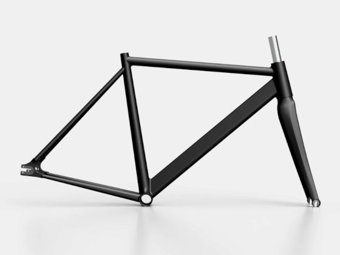
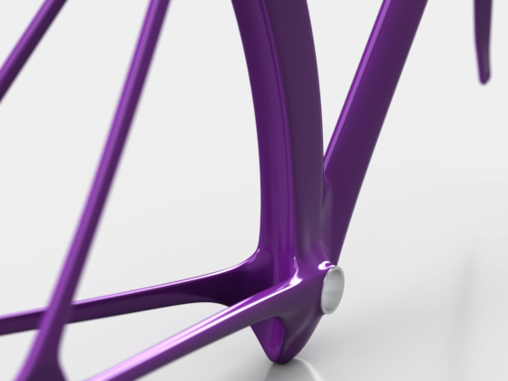
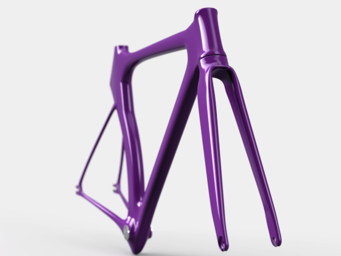
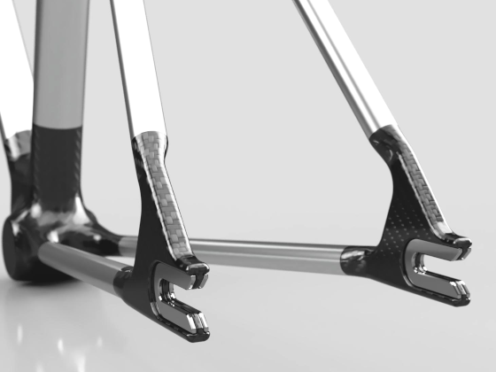

Habilidades
Programación
- Desarrollo de algoritmos de ETL, web scrapping, visualización de datos, análisis de redes sociales, inteligencia artificial, automatización de procesos, método de elementos finitos.
- Continuamente avanzando en buenas prácticas de ingeniería de software (uso de estilos, testeo, documentación, control de versiones, metodologías ágiles).
- Domino principalmente Python, pero también tengo experiencia desarrollando en Matlab, C++ y R.
- Conocimientos intermedios de bases de datos SQL y No-SQL (MongoDB y bases de archivos en JSON y XML).
- Conocimientos básicos de HTML, CSS, JavaScript y el framework Django.
Diseño Asistido por Computadora
- Experiencia profesional diseñando elementos de máquinas.
- Experiencia hobbista diseñando cuadros de bicicletas y piezas para impresión 3D, así como también realizando arte con código y visualizaciones de datos animadas.
- Manejo tanto programas en 2D (AutoCAD principalmente), como 3D paramétrico (SolidWorks, Inventor, Fusion 360) y modelado 3D (Rhinoceros y Blender).



